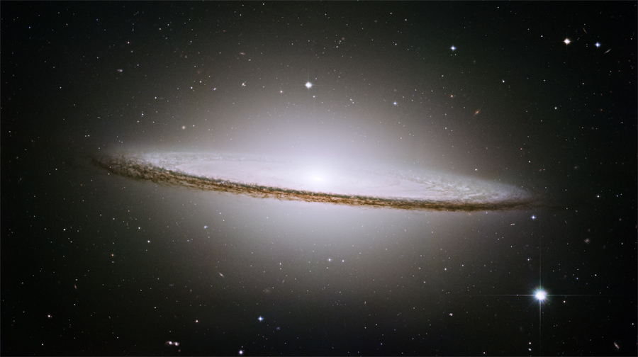
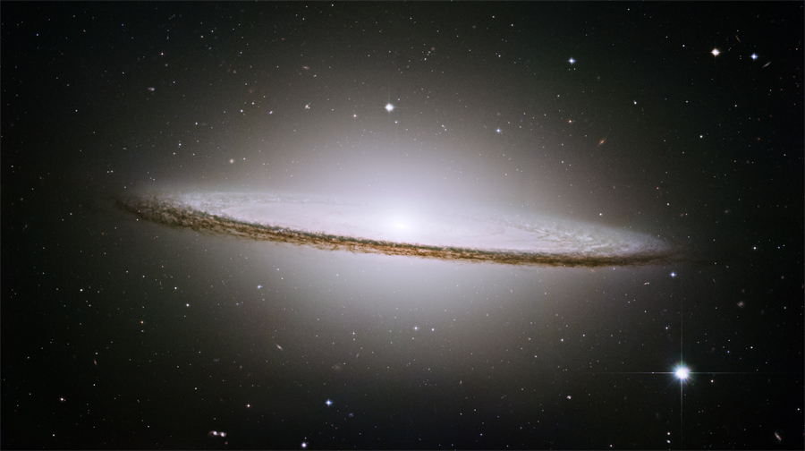

Top de estrellas masivas
- R136a1, estrella hipergigante azul
- Estrella de la Nebulosa Peonia
- Estrella Pistola
Misiones espaciales
- Apollo 8
- Géminis
- Apollo 11
- Luna 1
- Curiosity

 

¿Estamos solos en el Universo? ¿Somos únicos en el Universo o somos nosotros parte de una sociedad cósmica? Éstas son las preguntas más antiguas que la humanidad se a preguntado desde la primera vez que el ser humano miro hacia el cielo. El esfuerzo de la Astrobiología de NASA busca contestar estas preguntas. Astrobiología es el estudio de la vida en el Universo. Proporciona una perspectiva biológica a varias áreas de investigación de NASA, relacionando tal esfuerzo como la búsqueda de planetas habitables, las misiones de la exploración a Marte y Europa, son los esfuerzos para entender el origen de la vida, y de la planificación para el futuro de la vida más allá de la Tierra. La astrobiología se refiere a tres preguntas básicas, que se han preguntado en alguna forma por generaciones. La astrobiología es emocionante hoy porque tenemos la tecnología para comenzar a contestar estas preguntas fundamentales: El Centro de Investigación de NASA Ames es un líder en el desarrollo y la ejecución de el esfuerzo multidisciplinario de Astrobiología de NASA. El desarrollo del Instituto de Astrobiología de NASA busca reunir a los científicos más importantes en equipos de investigación, influenciando recursos académicos existentes de NASA, entrenando a jóvenes investigadores multidisciplinarios y para coordinar y proporcionar el liderazgo en el desarrollo de misiones y esfuerzos de investigación a través de los Centros de NASA y organizaciones asociadas.
¿Estamos solos en el Universo? ¿Somos únicos en el Universo o somos nosotros parte de una sociedad cósmica? Éstas son las preguntas más antiguas que la humanidad se a preguntado desde la primera vez que el ser humano miro hacia el cielo. El esfuerzo de la Astrobiología de NASA busca contestar estas preguntas. Astrobiología es el estudio de la vida en el Universo. Proporciona una perspectiva biológica a varias áreas de investigación de NASA, relacionando tal esfuerzo como la búsqueda de planetas habitables, las misiones de la exploración a Marte y Europa, son los esfuerzos para entender el origen de la vida, y de la planificación para el futuro de la vida más allá de la Tierra. La astrobiología se refiere a tres preguntas básicas, que se han preguntado en alguna forma por generaciones. La astrobiología es emocionante hoy porque tenemos la tecnología para comenzar a contestar estas preguntas fundamentales: ¿Cómo comienza y se desarrolla la vida? ¿Existe la vida en otras partes del universo? ¿Cuál es el futuro de la vida en la Tierra y más allá? El Centro de Investigación de NASA Ames es un líder en el desarrollo y la ejecución de el esfuerzo multidisciplinario de Astrobiología de NASA. El desarrollo del Instituto de Astrobiología de NASA busca reunir a los científicos más importantes en equipos de investigación, influenciando recursos académicos existentes de NASA, entrenando a jóvenes investigadores multidisciplinarios y para coordinar y proporcionar el liderazgo en el desarrollo de misiones y esfuerzos de investigación a través de los Centros de NASA y organizaciones asociadas.
Las estrellas se forman a partir de nubes moleculares: regiones poco densas del espacio que consisten principalmente en hidrógeno, helio y otros elementos más pesados. Sobre estas nubes diferentes fuerzas son ejercidas, como la gravedad de sus propios elementos o el choque con otras nubes. El efecto de esas fuerzas provoca el surgimiento de regiones más densas en su interior, y las hacen colapsar bajo su propia gravedad. Al colapsar se forma un "Glóbulo de Bok": una nebulosa oscura de gas, que de continuar densificándose da inicio a la generación de temperatura, formando así un núcleo de protoestrella. Así surgen las estrellas jóvenes, que pueden reconocerse al emitir un chorro de gas sobre su eje de rotación. Finalmente, cuando alcanzan ciertas condiciones de estabilidad, pasan a su llamada secuencia principal, que consiste en la prolongada fusión de hidrógeno en helio en su interior. Ya entonces pueden ser consideradas estrellas.